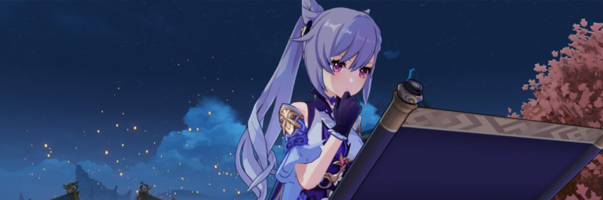

Story writing can often be a tedious task.
There will be times where a lot of things would hold one back.

Being a writer comes with its own set of difficulties which can make the job tough, despite all its perks. Working
independently on your own projects or having set projects to work on can be equally challenging. No matter your niche
energy that usually appear in places where ley lines have become blocked or elemental energy has otherwise accumulated.
or writing preferences, there are certain difficulties every writer faces which can hinder their performance.
Whether you are new to this field or an experienced writer, you are surely looking for ways to overcomes come of the most common challenges. Here are some of these most common challenges and some tips and tricks you can start using in order to beat them.
〓Dealing With Writers Block〓
One of the things that every writer is dreading is the famous writer’s block. Whether you are working
on a new project or you are trying to come up with an idea, this problem can make you feel disoriented.
Not being able to come up with new ideas is stressful and for some people, it can last for days or even weeks.
The best way to overcome this is to stop focusing your attention on this problem. If you feel stuck, you need
to find a way to focus your attention on something else. The best thing you can do is pick up a book and listen
to someone else’s ideas. A writer’s block won’t be easily combated if you continue stressing out about your lack
of ideas for a project.